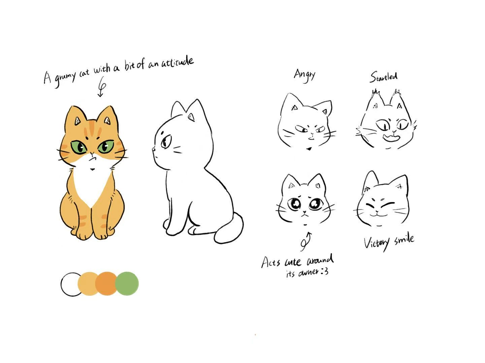
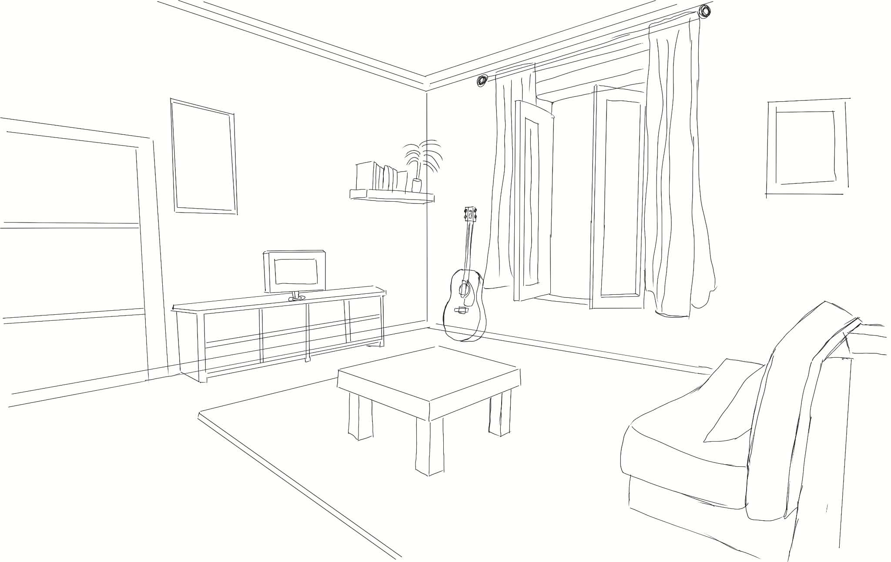
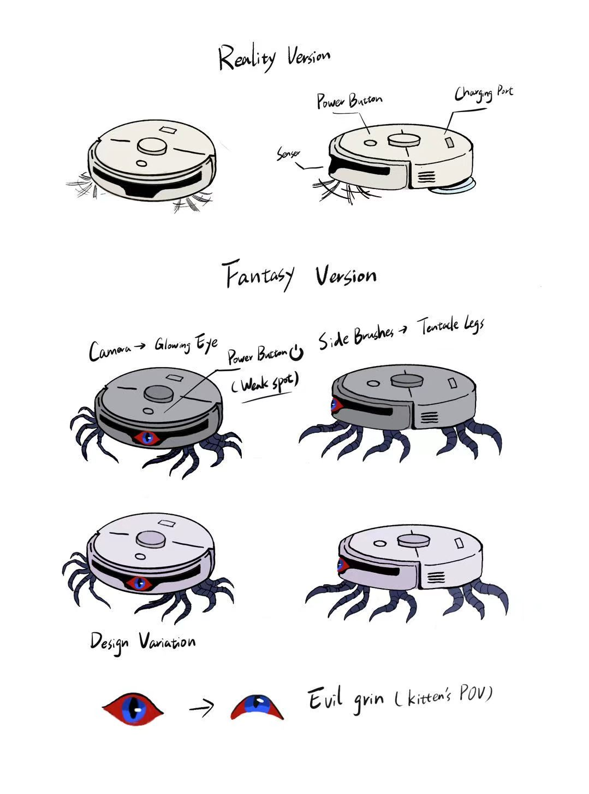
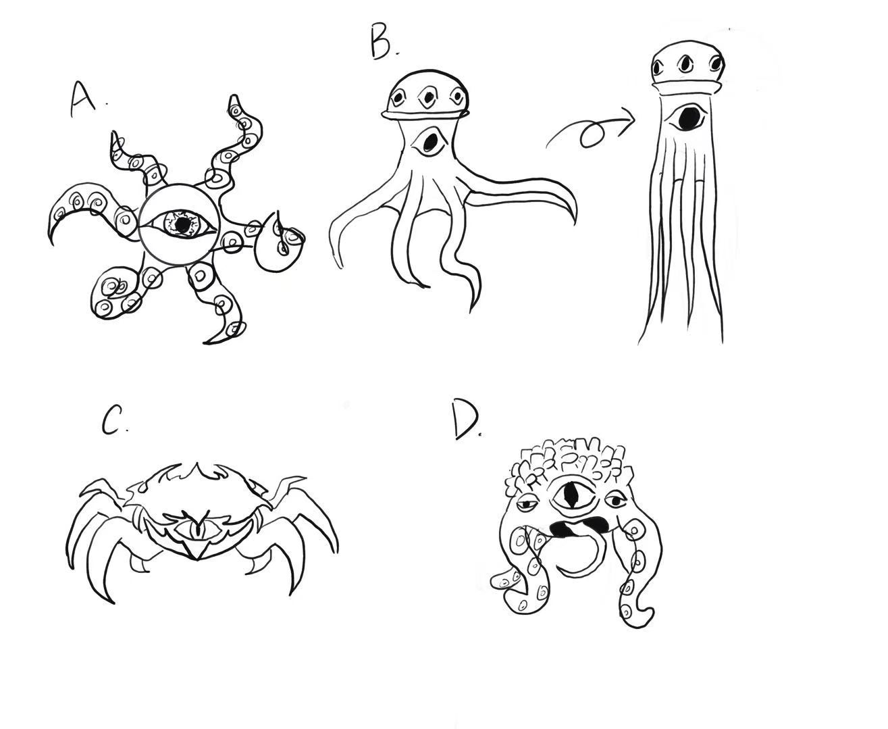
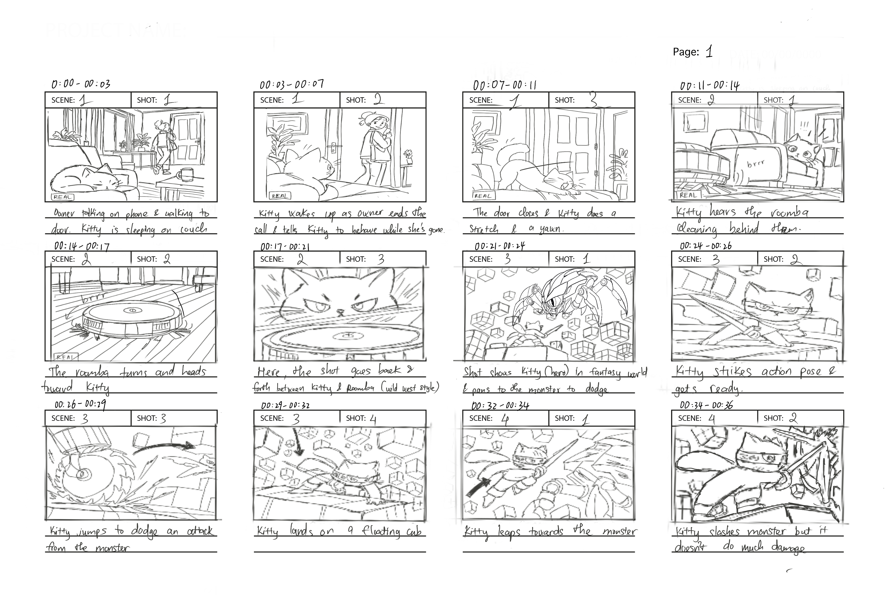
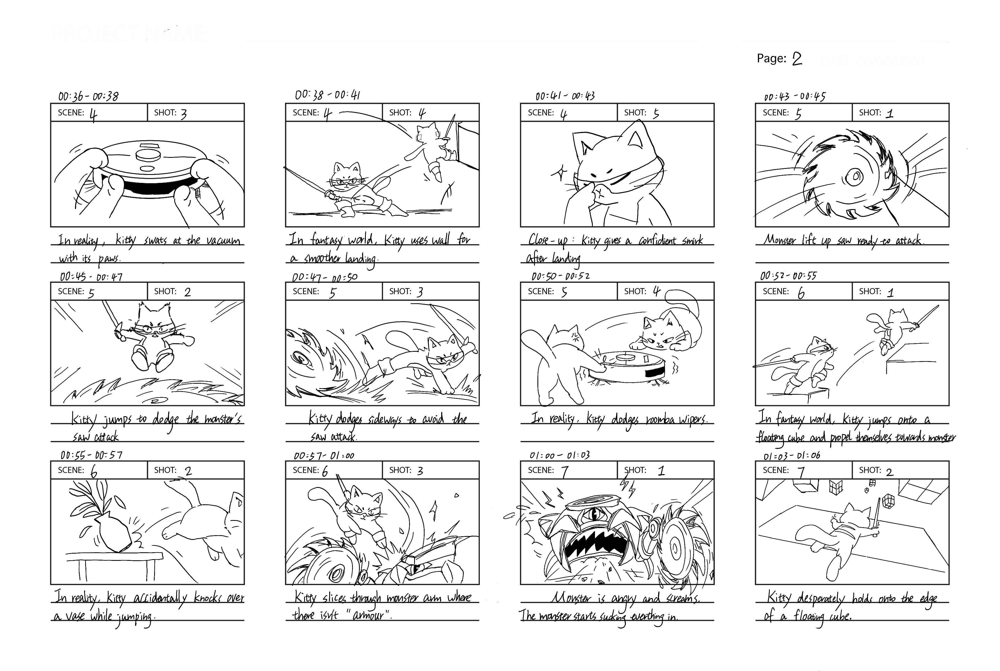
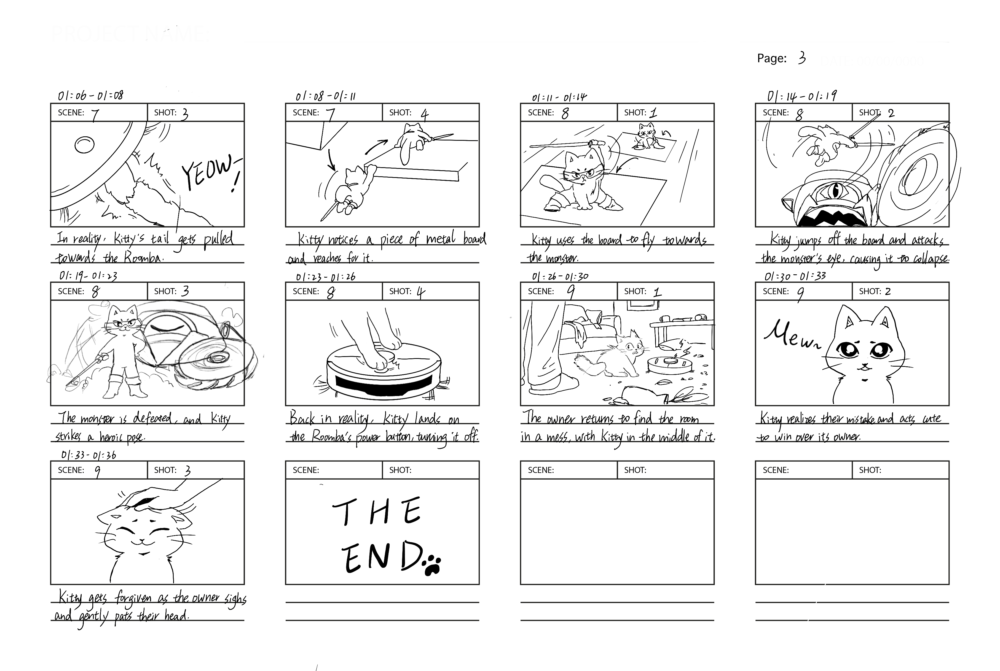

The kitty is home alone as their owner has left the house. The kitty imagines themselves to be in an intense sci-fi battle against an evil vacuum to protect its home against the “monster”. When the owner gets home, the living room is a mess and the kitty is the cause of it. We will be following the kitty through a series of animated fighting scenes.
The premise will start in a calm quiet living room with everything clean and neatly in place. The next scene will show that the owner tells the kitty to behave and that they will be back in an hour. As the door closes, the camera turns to the vacuum robot that is still turned on. As the vacuum turns to face the kitty and slowly approaches them, the kitty takes that as a challenge and imagines themselves and the vacuum in a sci-fi battle field with floating objects, which in reality are just tables, counters, lamps and couches. The kitty also picks up a sword as a weapon which in reality is a butter knife. The action scenes include the kitty dodging attacks, throwing different weapons and objects at the vacuum and finally flying on a plane/weapon to deal the final blow to the vacuum. The final scene shows the door open and the light lit up the living room welcoming the owner to a mess of scratch marks on the sofa, spilled cups and vases and broken lights. The animation ends with the kitty smiling in guilt to the owner.
CHECK OUT ALL THE COOL PICTURES WE DREW RAHHHHHH







The best is yet to come!